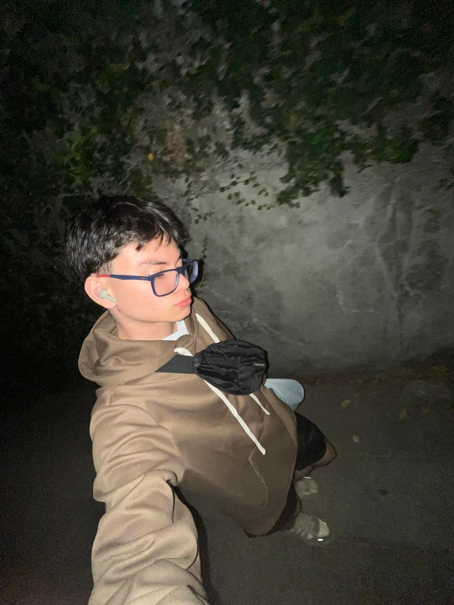
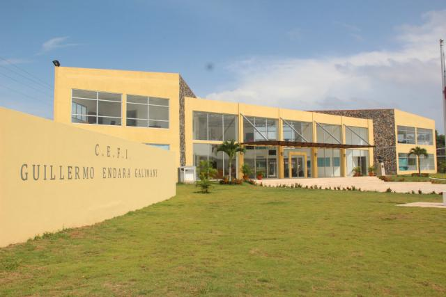
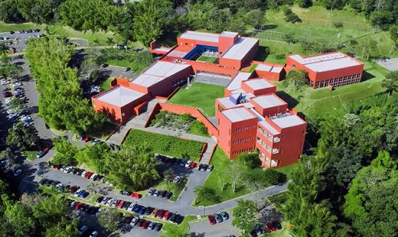

Perfil Personal

Nací en Panamá, tengo 19 años y actualmente resido en El Salvador por estudios universitarios. Soy una persona proactiva, enfocada en el desarrollo tecnológico y con aspiraciones de convertirme en AI Product Manager.
Historial Académico
- Maternal a Pre-Kinder: COIF Manos Abiertas
- Kinder a 3er grado: Instituto Bern
- 4to a 5to grado: Escuela San Vicente de Paúl
- 6to a 7mo grado: Escuela San Martín de Porres
-
8vo a 12vo grado: Bachiller en Ciencias en el Colegio Guillermo Endara Galimany (destacado por calificaciones).
9no a 12vo grado: Programa ¡Supérate! La Chorrera (estudios simultáneos).
-
Actualidad: Becado en la ESEN (Escuela Superior de Economía y Negocios).

Experiencia y Voluntariado
- ESPN - LAAC 2024: Trabajo logístico y operativo durante el Latin America Amateur Championship.
- Voluntariado Ambiental: Participación constante en múltiples jornadas de limpieza de playas y proyectos sociales.
Intereses
- Deportes: Práctica de skate y aficionado al Real Madrid.
- Entretenimiento: Consumo de anime y videojuegos de estrategia/competitivos.
- Música: Exploración de géneros urbanos e indie.